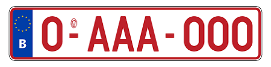

Kennzeichen
Die neuen Kennzeichen zeigen rechts neben dem blauen Eurorechteck auf weißem Grund in rubinroter Schrift eine Kombination aus einer Ziffer, gefolgt von einem kurzen Bindestrich, drei Buchstaben, wieder einem kurzen Bindestrich und nochmals drei Ziffern (zum Beispiel 1 – ABC – 242).
